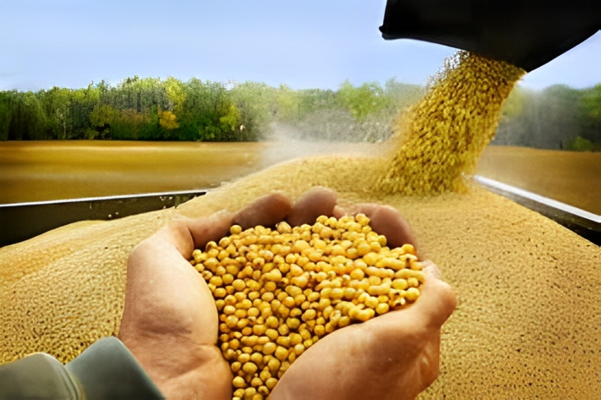
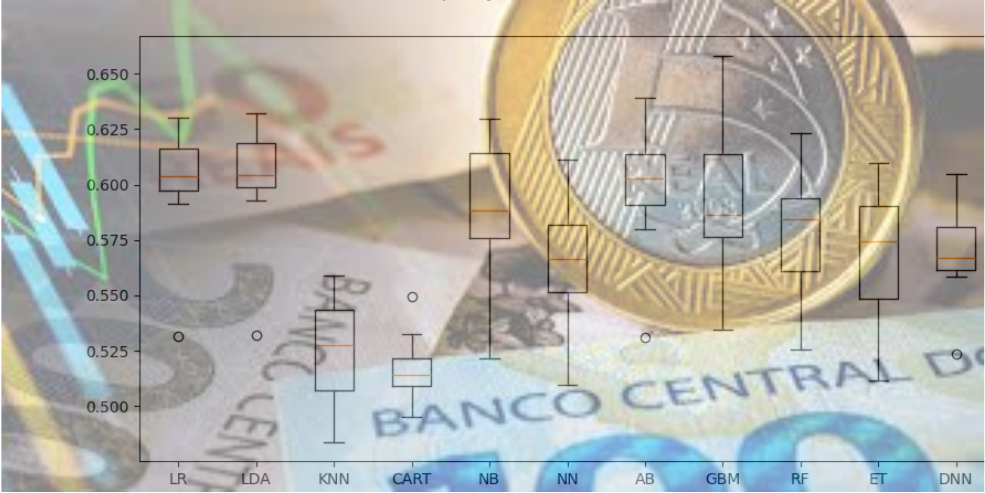
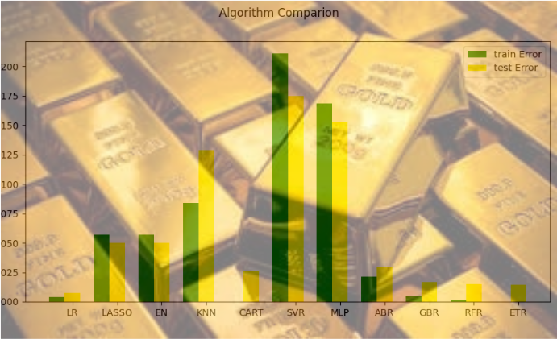
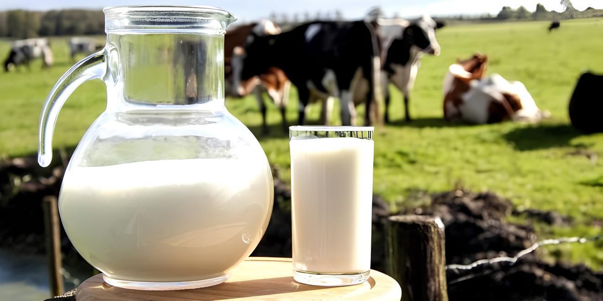
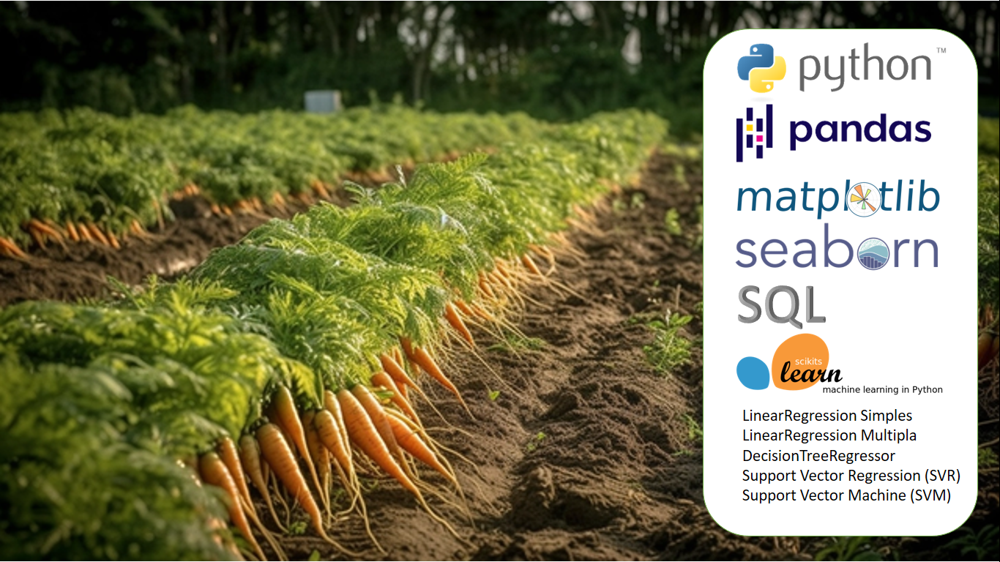
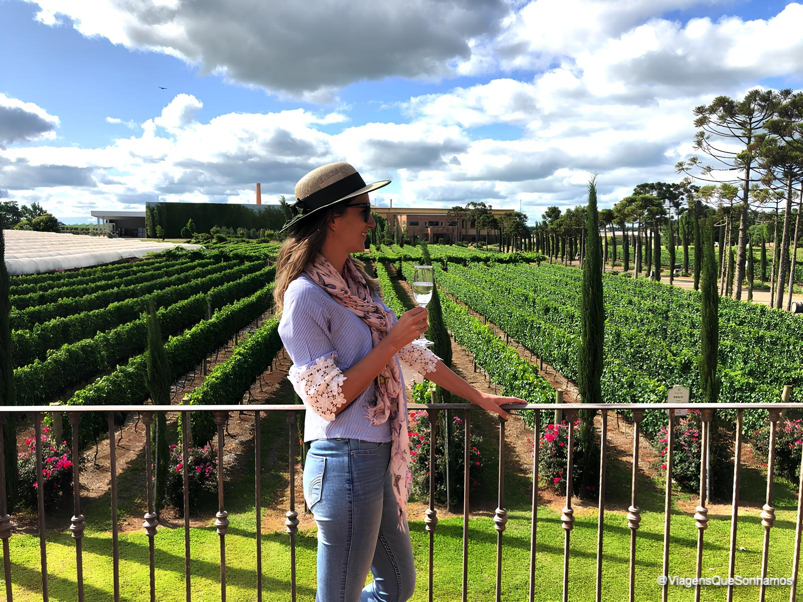
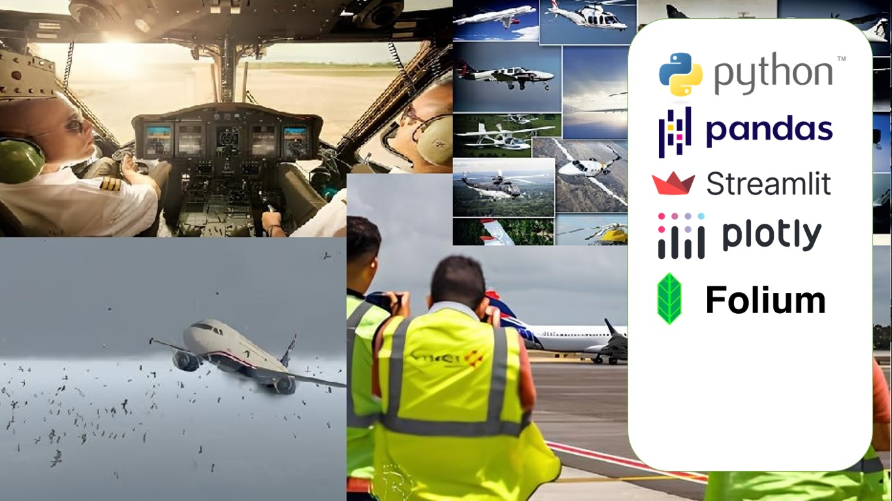
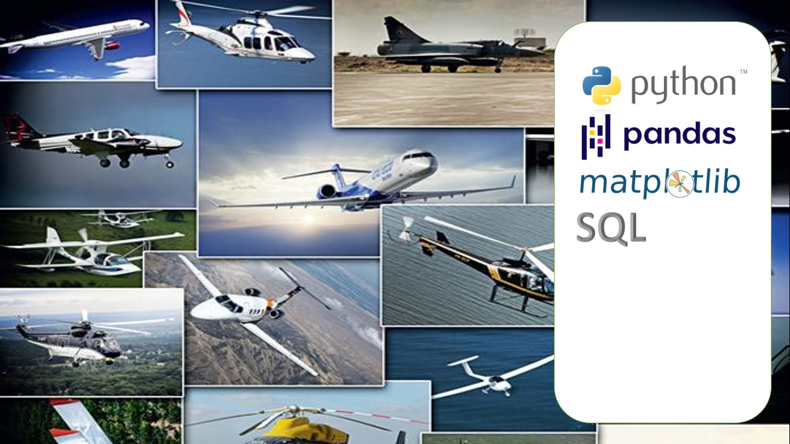

GENERATIVE_AI_project_processo_judicial (assistente jurídico GenAI)
- O principal objetivo deste projeto é revolucionar a eficiência e a eficácia na gestão de processos
jurídicos, proporcionando aos profissionais do direito uma ferramenta de suporte inteligente.
O projeto visa transformar o assistente jurídico de IA generativa em um aliado indispensável para
o advogado moderno, permitindo que o foco seja direcionado para a complexidade do raciocínio jurídico
e a relação humana com o cliente, enquanto a IA cuida da inteligência operacional e preditiva dos processos.
Financial_classification_project_fraud_detection (Classifica com a probabilidade de fraude)
- O objetivo desse trabalho é treinar um modelo de classificação que possa detectar
fraudes no pagamento com cartão de crédito buscando fornecer informações, em tempo real,
para que a compra não seja realizada caso tenha detectado alta probabilidade de ser fraude.
Financial_nlp_project_summarize_reports (Faz um resumo de relatórios de política monetária)
- Nesse projeto vamos unir vários relatórios de política monetária do Brasil fornecido pelo Banco Central e
gerar um resumo das 3 publicações utilizando recursos de NLTK com o objetivo de criar um documento resumido
amplo de 3 trimestres que possa ser lido e pesquisado de forma rápida sobre todo o assunto tratado nos últimos
9 meses sobre o cenário econômico brasileiro.
Financial_nlp_project_sentiment_stock (Classifica o sentimento de tweets sobre bitcoin em positivo e negativo)
- Nesse projeto vamos fazer uma análise de sentimento de dados publicados no X (twitter), em tempo real, relativo
às cotações da bolsa de valores. Essa análise vai poder passar para nossos investidores, através dos percentuais
de sentimento, se as postagens sobre as cotações, apresentam uma tendência positiva ou negativa para o assunto
tratado.
Financial_regression_project_risk_tolerance (prediz o nível de tolerância ao risco de uma pessoa)
- Este projeto tem como objetivo principal gerar modelos de machine learning e/ou deep learning para
predizer o nível de tolerância ao risco de uma pessoa.
Saber a tolerância ao risco é fundamental para tomar decisões financeiras mais assertivas, evitar perdas
e frustrações, planejar a aposentadoria com segurança e reduzir o estresse financeiro. É um conhecimento
importante tanto para a pessoa quanto para quem se relaciona com ela, como consultores financeiros e familiares.

Financial_reinforcement_project_soybean_compra_venda_mantem (sugere se compra, vende ou mantem títulos de soja)
- Esse projeto tem como objetivo treinar um modelo, utilizando aprendizado por reforço, que nos orientará
se no momento atual devemos comprar, vender ou manter os títulos (contratos) de soja futuros.
A decisão de comprar, vender ou manter títulos de soja é uma questão complexa que envolve uma série de
fatores econômicos e de mercado. Para tomar decisões informadas, é essencial realizar uma análise de mercado, que inclui:
Tendências históricas: Estudar o comportamento passado dos preços pode ajudar a prever movimentos futuros.
Relatórios de oferta e demanda: Informações sobre estoques, colheitas e consumo são cruciais.
Indicadores econômicos: Taxas de juros, inflação e câmbio podem influenciar a rentabilidade dos investimentos.
Financial_clustering_project_credit_card_holder (Agrupa Titulares de Cartão de Crédito)
- Esse projeto tem como objetivo criar clusters definidos conforme as características dos
titulares de cartão de crédito, agrupando esses titulares e caracterizando os clusters a
partir da ocorrência das variáveis utilizadas.
O agrupamento de titulares de cartões de crédito é uma prática essencial para empresas
administradoras de cartão de crédito. Essa estratégia traz a possibilidade de verificar em
que grupo, cluster, o titular do cartão está inserido, podendo tanto receber algumas vantagens
a mais no uso do cartão, como também sofrer alguma restrição conforme o grupo a que pertença.

Financial_classification_project_adimplencia_inadimplencia (Informa se haverá inadimplência)
- Este projeto tem como objetivo principal informar se uma pessoa pode ficar inadimplente
em um empréstimo financeiro.
A necessidade de saber se um empréstimo será recebido devidamente em sua integralidade, com
juros e correção, leva as empresas que trabalham emprestando dinheiro, procurar meios de
antecipar se o tomador do empréstimo tem condições e um perfil capaz de pagar, com fidelidade,
o valor tomado. Para isso a empresa que cede o empréstimo precisa estar a par de duas questões
fundamentais para sua segurança: saber qual o nível percentual do risco do tomador e saber, conforme o nível
desse risco, se empresta ou não o valor negociado.

Financial_regression_project_predict_gold_price (Prediz o preço do ouro)
- Este projeto tem como objetivo principal gerar um modelo de machine learning e/ou deep
learning para predizer o preço do ouro baseado em várias características fornecidas.
Os dados são um conjunto de dados de séries temporais com informações financeiras para
alguns índices de mercado, commodities, indicadores econômicos e taxas de câmbio.
Os índices de mercado e commodities são representados por meio do respectivo fundo
negociado em bolsa. Inclui valores de 2010 a 2024.

Agribusiness_classification_project_milk_quality (Revela se a variação de temperatura indica alguma anomalia no leite.)
- Nesse projeto vamos para a fase investigatória do Milk_Diagnostic (aparelho de coleta e envio de dados
do leite na fazenda via sms), vamos treinar um modelo de classificação, utilizando modelos de machine
learning para demonstrar se a variação de temperatura indica alguma anomalia ou não de contaminação no
leite que está armazenado na fazenda..
Agribusiness_reinforcement_project_milk_temperature (prediz o aumento da temperatura do leite)
- Nesse projeto vamos para a fase investigatória do Milk_Diagnostic (aparelho de coleta e envio de dados
do leite na fazenda via sms), vamos fazer um levantamento da variação da temperatura do leite em determinado
período. Aqui vamos fazer uma predição dessas temperaturas, utilizando aprendizado por reforço para os
próximos minutos para alertar tanto o produtor quanto a empresa captadora sobre um possível pico da
temperatura do leite armazenado na fazenda, antes que o evento aconteça.

Prediz_preco_cenoura (Verifica condições climáticas e prediz o preço da cenoura)
- Neste estudo, através de dados do clima, o objetivo é confirmar se as condições climáticas estão prejudicando
a safra de cenouras e qual seria o preço desse legume.
Escolheu-se os dados da região de São Gotardo - MG que é responsável pela maior parte da produção de cenouras
do Brasil, distribuindo para a região e Triângulo Mineiro.
predict_VENDASonline (Disponibiliza, online, o modelo de Machine Learning para fazer
a predição da quantidade de vendas por produto e dia da semana.)
- Este projeto disponibiliza, através de um site, o modelo de machine learning criado e
treinado no projeto vendas_SUPERMERCADOpredict, esse modelo permite fazer a predição de
vendas de um supermercado por produto e dia da semana.
Vendas_SUPERMERCADOpredict (Cria e Treina modelo de Machine Learning para fazer a predição da
quantidade de vendas por produto e dia da semana)
- Este projeto faz a limpeza e tratamento dos dados de vendas de supermercado, separa os dados de
treino e teste, treina, testa e verifica qual modelo ficou mais adequado para fazer a predição da
quantidade de vendas. Por fim faz o deploy do modelo para ser utilizado na previsão de vendas.
Clusterizacao_reclamação_consumidor (Agrupa as reclamações de consumidor
para designar atendimento conforme qualificação do atendente.)
- Neste estudo, através de dados de reclamações do consumidor, o objetivo é agrupar essas reclamações em clusters
conforme as características passadas, fazendo uso de machine learning.
Esse conhecimento sobre os grupos de reclamações de consumidores podem ser usados para designar atendentes com
qualificações direcionadas para o grupo de reclamantes.
Classifica_pagamento_vendas (Descobre a Forma de Pagamento Que Cada Cliente Vai Adotar na Sua Compra)
- Este projeto prevê as prováveis formas de pagamento que cada cliente vai adotar em uma compra, mostrando
o percentual de probabilidade de cada uma, podendo, o vendedor/sistema, se antecipar no convencimento da
venda para seu cliente.
Qualidade_do_ar (Classifica a qualidade do ar)
- Esse projeto recebe os dados relativos a substâncias contidas no ar que são coletadas através de
sensores químicos de qualidade do ar.
Analisa e trata os dados submetendo a um algoritmo de clusterização de machine learning,
definindo e marcando cada linha do arquivo com seu cluster mais adequado.
Após a clusterização treina um modelo de classificação, em regressão logística de machine
learning, fazendo a predição, em percentual, de qual a probabiliade da qualidade do ar,
apresentado através dos componentes contidos no mesmo, de pertencer a um grupo ou a outro.

Qualidade_do_vinho_tinto (Classifica a qualidade do vinho tinto utilizando modelo de
machine learning.)
- Este projeto faz a limpeza e tratamento dos dados do vinho, separa os dados de treino e
teste, treina, testa e verifica se o modelo ficou adequado para fazer a classificação da
qualidade do vinho. Por fim faz o deploy do modelo.
prediz_CONSUMOcerveja_REDEneural_keras (Cria e Treina modelo de Deep Lerning com rede
neural para predizer o consumo de cerveja.)
- Este projeto faz a limpeza e tratamento dos dados de consumo de cerveja, separa os dados
de treino e teste, treina, testa e verifica qual modelo ficou mais adequado para fazer a
predição do consumo de cerveja. Por fim faz o deploy do modelo para ser utilizado na previsão
de consumo.
Cenipa_classification (Treina modelo de classificação para saber qual o período do dia
seria mais provável de acontecer o acidente.)
- Este projeto tem como objetivo não em saber se haverá ou não acidente aeronáutico, mas
qual o período teria a maior probabilidade de acontecer, podendo assim auxiliar no
planejamento de segurança de voos, reduzindo a probabilidade de ocorrência de um
acidente aeronáutico.
Cenipa_clustering (Agrupa acidentes aeronáuticos em clusters definidos pelo modelo.)
- Esse projeto tem como objetivo criar clusters definidos conforme as características dos
acidentes aeronáuticos, passados pela base de dados originária do Cenipa da Força Aéria
Brasileira, agrupando esses acidentes e caracterizando os clusters a partir do percentual
ocorrido nas variáveis utilizadas.

Cria insights dos dados de ocorrências de acidentes aeronáuticos
- Este projeto tem como objetivo analisar os dados de ocorrências de acidentes aeronáuticos e gerar
insights com gráficos e mapas utilizando streamlit e python sendo disponibilizado em nuvem.
Faz análise dos dados de ocorrências de acidentes aeronáuticos
- Este projeto tem como objetivo fazer uma análise ampla dos dados de ocorrências de acidentes aeronáuticos
limpos e tratados no projeto Cenipa_limpa_trata_armazena, oferecendo uma visão ampla com a descrição e
diagnóstico dos dados.

Faz análise dos dados de aeronaves envolvidas em acidentes aeronáuticos
- Este projeto tem como objetivo fazer uma análise ampla dos dados de aeronaves envolvidas em acidentes
aeronáuticos limpos e tratados no projeto Cenipa_limpa_trata_armazena, oferecendo uma visão ampla com
a descrição e diagnóstico dos dados.
Faz análise dos dados de fatores contribuintes e recomendações de segurança em acidentes aeronáuticos
- Este projeto tem como objetivo fazer uma análise ampla dos dados de fatores contribuintes e recomendações
de segurança em acidentes aeronáuticos limpos e tratados no projeto Cenipa_limpa_trata_armazena, oferecendo
uma visão ampla com a descrição e diagnóstico dos dados.
Monta Base Analítica de Acidentes Aeronáuticos para Estudos
- Este projeto visa acessar as bases de dados de acidentes aeronáuticos do cenipa, fazer a limpeza e
o tratamento dos dados, selecionar as colunas dos dados relevantes para pesquisa, deixando uma base
analítica única para servir de estudo para outros projetos.